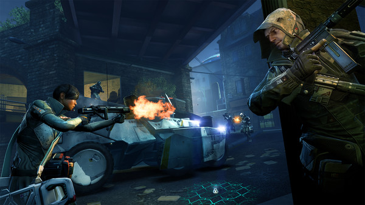
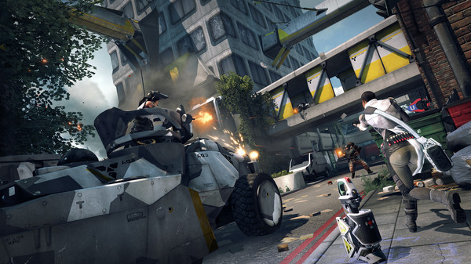
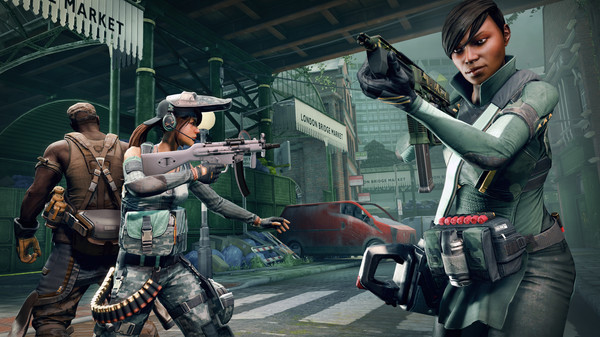

Description:
Dirty Bomb takes first person shooters back to their purest
roots in a fast-paced team game that will challenge even the
most competent players. This game won’t hold your hand, in
fact it is more likely to kick your teeth in. With no
controller support or aim assist, all that lies between you
and certain death is player skill and reaction. Work together
or die alone in the most challenging team-based FPS.
A string
of 'dirty bomb' attacks cripple London, leaving the Central
Disaster Authority to restore it. When criminal syndicate
Jackal begin disrupting and stealing their technology, the
capital is thrown into chaos as mercenaries from across the
globe are hired by both sides.
That's where you come in.
After all, what’s a little radiation sickness when there’s
money to be made?

Features:
- Fast-paced, highly competitive teamplay that takes the shooter back to its purest roots
- Over 20 distinct Mercenaries, each bursting with their own abilities, attributes and expletives
- Two game-modes:
- Objective – Battle through parts of the city, completing objectives to reach the finale before time runs out
- Stopwatch – Objective mode for competitive types, where teams swap sides mid-match to see who's faster

Quote:
"Acceptable, but could have been so much better. Dirty Bomb is hampered by free-to-play nagging, small maps, and too many uninspiring matches. 5/10
— PC Invasion; https://www.metacritic.com/game/pc/dirty-bomb"